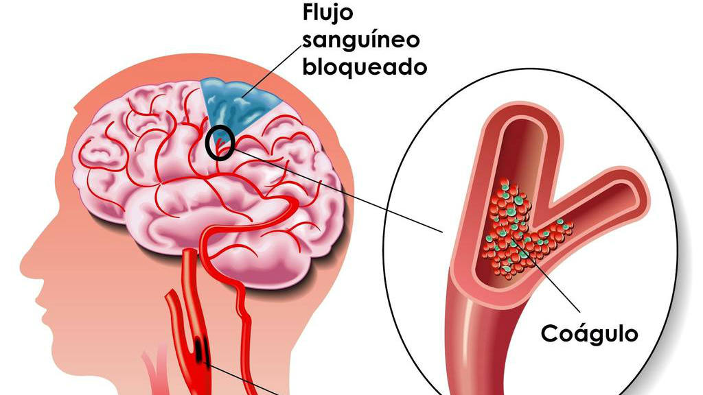
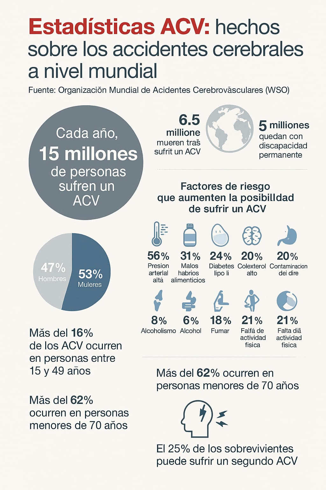
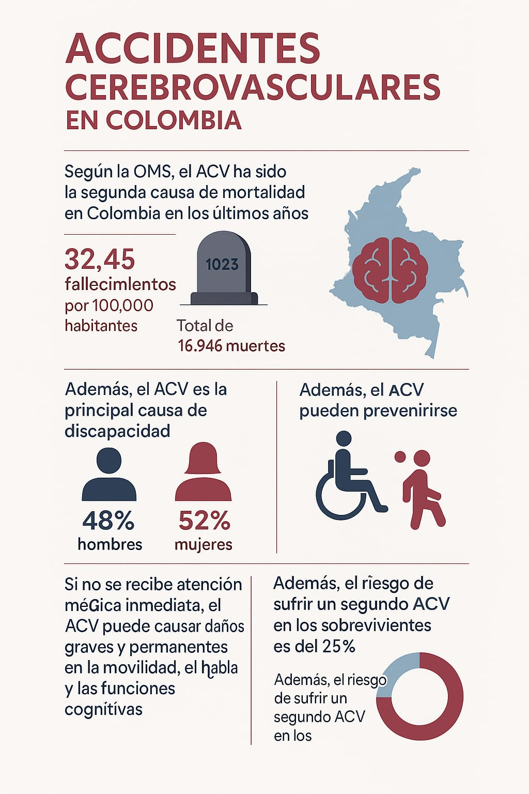

Revisión documental
Factores de Riesgo Asociados a Accidentes Cerebrovasculares en Adultos Jóvenes. El accidente cerebrovascular (ACV), también conocido como ictus o derrame cerebral, se define como la interrupción súbita del flujo sanguíneo al cerebro o la hemorragia dentro del mismo, lo que provoca un déficit neurológico focal. Tradicionalmente se ha considerado una enfermedad de adultos mayores, la incidencia de ACV en adultos jóvenes (individuos entre 18 y 45 años) está en aumento, generando una creciente preocupación debido a las implicaciones significativas en su calidad de vida, productividad y esperanza de vida. Comprender los factores de riesgo específicos en esta población es crucial para desarrollar estrategias de prevención y manejo efectivas. 
A continuación, se presentan las bases teóricas que sustentan el estudio de los factores de riesgo asociados a ACV en adultos jóvenes:
1. Definición y Clasificación del Accidente Cerebrovascular (ACV):

ACV Isquémico
Ocurre cuando un vaso sanguíneo que irriga el cerebro se bloquea, generalmente por un coágulo sanguíneo (trombo o émbolo), lo que lleva a la privación de oxígeno y nutrientes a una parte del cerebro.
- Trombótico
- Embólico
- Lacunar
- Criptogénico (de causa indeterminada).
ACV Hemorrágico
Resulta de la ruptura de un vaso sanguíneo en el cerebro, causando sangrado dentro del tejido cerebral (hemorragia intracerebral) o entre las membranas que lo recubren (hemorragia subaracnoidea).

2. Epidemiología del ACV en Adultos Jóvenes:

La incidencia de ACV en adultos jóvenes, aunque es menor que en adultos mayores, no es despreciable y parece estar en aumento en algunas poblaciones.
Las causas y los factores de riesgo pueden diferir significativamente entre los adultos jóvenes y los adultos mayores.
El impacto socioeconómico y personal del ACV en adultos jóvenes puede ser particularmente devastador debido a la pérdida de años de vida productiva y las potenciales discapacidades a largo plazo.
3. Factores de Riesgo Tradicionales

Hipertensión Arterial
Un factor de riesgo mayor y tratable para ambos tipos de ACV en todas las edades, incluyendo adultos jóvenes.

Diabetes Mellitus
La diabetes aumenta el riesgo de enfermedad vascular y, por lo tanto, de ACV isquémico.

Dislipidemia
Niveles anormales de colesterol y triglicéridos pueden contribuir a la aterosclerosis, un factor importante en el ACV isquémico.

Tabaquismo
El consumo de tabaco daña los vasos sanguíneos y aumenta la propensión a la formación de coágulos, incrementando el riesgo de ACV isquémico y hemorrágico.

Obesidad y Sedentarismo
Estos factores contribuyen a otros factores de riesgo como la hipertensión, la diabetes y la dislipidemia.

Antecedentes Familiares de ACV
La predisposición genética puede jugar un papel en el riesgo de ACV.

4. Factores de Riesgo Específicos en Adultos Jóvenes

Disección Arterial Cervical
Desgarro en la pared de las arterias carótidas o vertebrales, una causa importante de ACV isquémico en jóvenes. Puede ocurrir espontáneamente o después de traumatismos menores.

Foramen Oval Permeable (FOP)
Un orificio entre las aurículas del corazón que normalmente se cierra después del nacimiento. En algunos adultos jóvenes con FOP, un coágulo sanguíneo puede pasar de la circulación venosa a la arterial y llegar al cerebro, causando un ACV embólico (embolia paradójica).

Migraña con Aura
Algunos estudios sugieren una asociación entre la migraña con aura y un mayor riesgo de ACV isquémico, particularmente en mujeres jóvenes que también fuman o usan anticonceptivos orales.

Uso de Anticonceptivos Orales
Especialmente aquellos con altas dosis de estrógeno, se han asociado con un mayor riesgo de trombosis venosa cerebral y ACV isquémico en mujeres jóvenes, particularmente si existen otros factores de riesgo como el tabaquismo o la migraña.

Abuso de Sustancias
El consumo de drogas como la cocaína y las anfetaminas puede aumentar el riesgo de ACV hemorrágico e isquémico debido a sus efectos vasoconstrictores y procoagulantes.

Enfermedades Autoinmunes e Inflamatorias
Condiciones como el lupus eritematoso sistémico, la vasculitis y la enfermedad de Behçet pueden aumentar el riesgo de ACV debido a la inflamación y el daño vascular.

Trastornos de la Coagulación (Trombofilias)
Condiciones hereditarias o adquiridas que aumentan la tendencia a formar coágulos sanguíneos.

Cardiopatías Congénitas o Adquiridas
Algunas enfermedades cardíacas pueden aumentar el riesgo de embolia cerebral.
5. Mecanismos Fisiopatológicos
La aterosclerosis, aunque más común en adultos mayores, puede comenzar en la juventud y contribuir al riesgo de ACV isquémico.
La trombogénesis (formación de coágulos sanguíneos) juega un papel crucial en el ACV isquémico.
La disfunción endotelial (daño al revestimiento de los vasos sanguíneos) es un factor subyacente en muchos factores de riesgo de ACV.
La inflamación crónica puede contribuir al desarrollo de aterosclerosis y aumentar la vulnerabilidad vascular.
Introducción

El accidente cerebrovascular (ACV) es una de las principales causas de morbimortalidad en el mundo. Aunque históricamente se ha asociado con personas mayores, en las últimas décadas se ha observado un aumento alarmante en su incidencia en adultos jóvenes (18 a 45 años). Este cambio epidemiológico ha despertado un creciente interés en la comunidad médica y científica por identificar los factores de riesgo específicos en esta población de adultos jóvenes de tener un ACV.
En Cúcuta, Colombia, los casos de ACV en adultos jóvenes representan un desafío no solo médico, sino también social y económico, debido a su impacto en la calidad de vida de los pacientes y en los elevados costos del tratamiento y la rehabilitación de la persona. El Hospital Universitario Erasmo Meoz, uno de los principales centros de salud de la región, ha atendido un número considerable de casos de ACV.
Información de la Investigación
Esta investigación tiene como propósito identificar los principales factores de riesgo asociados al desarrollo de accidentes cerebrovasculares en adultos jóvenes atendidos en el Hospital Universitario Erasmo Meoz durante el periodo 2025. Para ello, se analizarán tanto factores tradicionales como hipertensión, diabetes, dislipidemia, obesidad, sedentarismo, consumo de tabaco y alcohol, como otros menos frecuentes, tales como trastornos autoinmunes y alteraciones en la coagulación. Los resultados permitirán establecer estrategias preventivas y de intervención temprana dirigidas a esta población


Planteamiento del Problema

ACV. Cuando se habla de ACV se asocia primeramente e exclusivamente de los adultos mayores; sin embargo con el paso del tiempo especialmente en las últimas décadas se a evidenciado un incremento en la aparición en comunidades más jóvenes que lo normal, este panorama ha generado una intensa preocupación por la comunidad médica y científica (Putaala et al, 2009). Investigaciones han determinado que algunos de los factores de riesgo que tienen una gran influencia en la aparición de la enfermedad son la hipertensión arterial, diabetes mellitus, dislipidemia, obesidad, sedentarismo, tabaquismo, consumo de alcohol y drogas, antecedentes familiares y enfermedades cardiovasculares preexistentes (O'Donnell MJ, Chin SL, Rangarajan S, Xavier D, et al, 2016) - (Ekker MS, Boot EM, Singhal AB, Tan KS, et al., 2018).
Teniendo en cuenta factores menos comunes como lo podrían llegar a ser: algunos trastornos autoinmunes, ciertas infecciones y alteraciones en la coagulación del paciente, los cuales pueden desarrollar un papel muy importante en la aparición de esta enfermedad (Guo Y, Li J, Li W, Zhang Y, et al, 2016). En Cúcuta, Colombia; no hay muchos estudios actuales que se encarguen de investigar los distintos factores de riesgo que podrían llegar a causar enfermedades cardio cerebrovasculares entre ellas el ACV. En el Hospital HUEM se han llegado a tender muchos casos de enfermedades cardio cerebrovasculares lo que apoya la idea de la necesidad de este análisis para así poder llevar a cabo estrategias de prevención y control de estas enfermedades como el ACV.
Internacional
Nacional
Formulación del Problema
¿Cuáles son los factores de riesgo asociados a la ocurrencia de accidentes cerebrovasculares en adultos jóvenes (18 a 45 años) atendidos en el Hospital Universitario Erasmo Meoz de la ciudad de Cúcuta durante el período 2025?
Objetivos

Objetivo General
Determinar los factores de riesgo asociados a los accidentes cerebrovasculares en adultos jóvenes (18 a 45 años) atendidos en el Hospital Universitario Erasmo Meoz de la ciudad de Cúcuta durante el período 2025.
Objetivos Especificos
- Identificar la prevalencia de los principales factores de riesgo cerebrovasculares en adultos jóvenes atendidos en el hospital Universitario Erasmo Meoz de Cúcuta.
- Determinar la relación entre factores de riesgo modificables (hipertensión, obesidad, diabetes, tabaquismo, entre otros) y la incidencia de ACV en adultos jóvenes.
- Evaluar la influencia de factores genéticos y enfermedades ya preexistentes en los adultos jóvenes con ACV.
Justificación de la Investigación

La elevada cifra de incidencia en los ACV en adultos jóvenes en los últimos años manifiesta un desafío para el sistema de salud, esto se debe a su impacto en la calidad de vida de los pacientes junto con sus consecuencias socioeconómicas originadas por la discapacidad y sus costos en tratamientos a largo plazo que provoca (Sacco RL, Kasner SE, Broderick JP, Caplan LR, et al, 2013). Múltiples factores de riesgo asociados al ACV se han establecido por medio de múltiples investigaciones por parte de países desarrollados en sus poblaciones, por ello se considera necesario y fundamental realizar estas mismas investigaciones en el contexto local con la intención de entender de mejor manera los patrones epidemiológicos de esta enfermedad en Cúcuta.
Este estudio permitirá conseguir la información necesaria para el reconocimiento de los distintos factores de riesgo que son presentados por la población de adultos jóvenes con ACV; el cómo varían y cuando están presentes, lo cual ayudará a poder avanzar en los procesos de atención primaria del ACV en adultos jóvenes. de igual manera, El modo en el que los resultados de esta investigación podrán ser de gran ayuda para el desarrollo de las áreas de investigaciones y de políticas de salud pública, las cuales están enfocadas en conllevar los resultados de esta enfermedad a nivel de la población.
Delimitación del Problema

Tiempo
El estudio abarcará el período del 2025.
Espacio
La investigación se realizará en el Hospital Universitario Erasmo Meoz, ubicado en la ciudad de Cúcuta, Colombia.
Población
Se incluirán pacientes de entre 18 y 45 años atendidos en la institución con diagnóstico confirmado de ACV o con factores de riesgo predisponentes.
Temática
Se centrará en la identificación y análisis de los factores de riesgo asociados al ACV en adultos jóvenes, excluyendo otras patologías neurológicas sin relación directa con el evento cerebrovascular.

Referencias
- Feigin VL, Stark BA, Johnson CO, Roth GA, et al. Global, regional, and national burden of stroke and its risk factors, 1990–2019: a systematic analysis. Lancet Neurol. 2021;20(10):795-820 https://pubmed.ncbi.nlm.nih.gov/34487721/
- Putaala J, Metso AJ, Metso TM, Konkola N, et al. Analysis of 1008 consecutive patients aged 15 to 49 with first-ever ischemic stroke: the Helsinki young stroke registry. Stroke. 2009;40(4):1195-1203.https://pubmed.ncbi.nlm.nih.gov/19246709/
- O'Donnell MJ, Chin SL, Rangarajan S, Xavier D, et al. Global and regional effects of potentially modifiable risk factors associated with acute stroke in 32 countries (INTERSTROKE): a case-control study. Lancet. 2016;388(10046):761-775.https://pubmed.ncbi.nlm.nih.gov/27431356/
- Ekker MS, Boot EM, Singhal AB, Tan KS, et al. Epidemiology, aetiology, and management of ischaemic stroke in young adults. Lancet Neurol. 2018;17(9):790- 801.https://pubmed.ncbi.nlm.nih.gov/30072187/
- Guo Y, Li J, Li W, Zhang Y, et al. Clinical features and risk factors of cryptogenic stroke in Young adults. BMC Neurology.https://pubmed.ncbi.nlm.nih.gov/35172762/